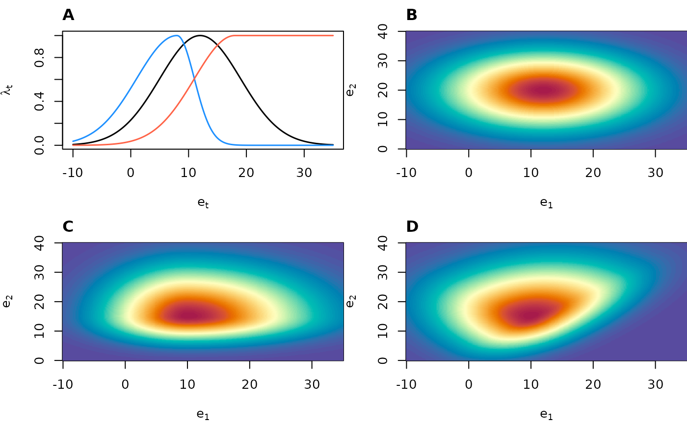

The xsdm model
Daniel C. Reuman
Department of Ecology and Evolutionary Biology and Center for Ecological Research, University of KansasSource:
vignettes/xsdm_model.Rmd
xsdm_model.RmdAbstract. This document is the intended point of entry for the statistically and computationally sophisticated researcher to begin using the xsdm package. We state the scientific purpose of the xsdm approach. We then introduce the main statistical models that xsdm is built on. And we derive the likelihood functions for those models.
Scientific purpose of xsdm
Ecological niche models (ENMs) and species distribution models (SDMs) relate environmental conditions (mostly climate) to observation records of a species, and are widely used to estimate the current and future geographic distributions of species (Peterson and Soberón 2012). However, most classic SDM methods examine spatial relationships between temporally averaged climate variables and species occurrences. An important limitation of current SDMs is they do not account for inter-annual climate variability, even though variability is known by ecological demographers to play a crucial role in population dynamics and therefore probably also in species geographic distributions (Gardner et al. 2021; Perez-Navarro et al. 2021; Stewart et al. 2021; Ingenloff and Peterson 2021; Barve et al. 2014); and theory is well developed indicating ways in which variability should influence species ranges (Holt et al. 2022). Additionally, global change is altering patterns of climate variability, e.g. by modifying the intensity, frequency, and duration of extreme events such as heat waves and floods (Hirabayashi et al. 2013; Meehl and Tebaldi 2004), which contribute to variability. Thus, addressing the shortcomings of current SDMs with respect to climate variability seems important for better understanding the impacts of climate change on biodiversity, and is the first main purpose of the xsdm model. The xsdm package, to which this document is a partial introduction, is a frequentist implementation of the xsdm modelling approach.
To give a sense of how variability must influence species distributions, we give an idealized but conceptually accurate example. Polar bears’ diets consist largely of ringed and bearded seals, which they attack from a platform of sea ice. Polar bear populations are thus heavily dependent on sea ice, especially in spring when mother bears and their new cubs emerge from hibernation. Because of this dependence, it is easy to imagine that a polar bear population in a location for which spring temperatures are -5°C every year may be much more likely to persist than a population in a location for which spring temperatures are -15°C in half the years and 5°C in the other half of the years, even though both locations have the same average spring temperature. Reference (Berti et al. 2025) makes this intuition somewhat more formal with a modelling example (their Fig. 1) prior to formally developing the statistics behind (an earlier version of) the xsdm model.
The second main goal of the xsdm approach is to help incorporate population dynamic processes into SDMs. Although it is population dynamics that mediates the relationship between environmental fluctuations and whether a population of a given species can persist in a location, traditional SDMs mostly ignore populations dynamics. Several important studies have advocated for population-process-explicit SDMs, and have helped inspire our work (Nadeau et al. 2017; Holt 2009; Evans et al. 2016; Normand et al. 2014; Pagel and Schurr 2012; Ehrlén and Morris 2015; Briscoe et al. 2019). The xsdm approach builds on those earlier efforts, in part by emphasizing a computationally tractable approach that can be practically applied to commonly available data.
The xsdm model
Overview of model structure
We assume a population, \(p_t\), of a species in a location follows the model \(p_{t+1} = \lambda_t p_t\), where \(\lambda_t\) is the annual net population growth rate. Given an environmental time series \(\vec{e}_t\) for the location, the model estimates the habitat suitability of the location for the species in three steps. First, a “growth-environment function” model component postulates that \(\lambda_t\) is a function of \(\vec{e}_t\) and a first set of model parameters, \(\theta_1\). Second, the long-term stochastic growth rate (ltsgr) for the location is computed as
\[ \ltsgr = \mean{\log(\lambda_t)}, \]
where the overbar represents the average through time. All logarithms in xsdm documentation are natural logarithms. The ltsgr is a fundamental concept of stochastic demography (Caswell 2000; Morris and Doak 2002; Lande et al. 2003; Tuljapurkar 1990) which characterizes an average rate at which a population grows from low density in a stochastic environment. Third, the habitat suitability of the location is assumed to be a sigmoid function of the ltsgr, with the specific shape of the sigmoid controlled by a second set of model parameters, \(\theta_2\). This component of the model is called the “detection link”. For model confrontation with species occurrence data and (pseudo-)absences, habitat suitability is assumed to represent a probability of occurrence/detection in a location to which the species could have access (i.e., it is geographically accessible). Details of the model are presented below. See also (Berti et al. 2025) for additional details (though that publication uses a different growth-environment function and a Bayesian approach). We recognize that the xsdm model is an idealization, and many complexities can be added in future work which may or may not statistically improve the degree to which the model describes data. The model described here is a starting point.
The growth-environment function
Let \(n\) be a positive integer representing the number of environmental variables which will influence population growth in our model, i.e., \(n\) is the dimension of \(\vec{e}_t\). Let \(\vec{\mu}=(\mu_1,\ldots,\mu_n)\) be an \(n\)-vector of unconstrained real values representing the optimal values for growth of each environmental variable. Let \(\vec{\sigma}_L=(\sigma_{L,1},\ldots,\sigma_{L,n})\) and \(\vec{\sigma}_R=(\sigma_{R,1},\ldots,\sigma_{R,n})\) be \(n\)-vectors of strictly positive real values representing widths of the growth-environment function to the left and to the right, respectively, with respect to some axes. Let \(O\) be an \(n \times n\) orthogonal matrix (i.e., \(OO^\tau = I\), where the \(\tau\) represents matrix transpose) encoding the axes used. Let \(\lambda_{\text{max}}\) represent population growth under optimal conditions, i.e., the maximum possible annual net growth rate. The growth-environment function is defined as
\[\begin{equation} \lambda_t = \lambda_{\text{max}} \prod_{i=1}^n \exp\left( -\frac{1}{2} \left( \frac{u_{t,i}}{\sigma_i(u_{t,i})} \right)^2 \right), \label{eq:gefunc} \end{equation}\]
where \(\vec{u}_t = O^{-1}(\vec{e}_t-\vec{\mu})\) and \(\sigma_i(u_{t,i}) = \sigma_{L,i}\) if \(u_{t,i} \leq 0\) and \(\sigma_i(u_{t,i}) = \sigma_{R,i}\) if \(u_{t,i} > 0\). the figure below shows examples of functions that can be obtained from \(\eqref{eq:gefunc}\) in one and two dimensions.
We now elaborate the reasoning behind \(\eqref{eq:gefunc}\) and how the parameters control the shape of the function. In the univariate case (\(n=1\)), \(\eqref{eq:gefunc}\) reduces to
\[ \lambda_t= \lambda_{\text{max}}\exp \left( -\frac{1}{2} \left( \frac{e_t - \mu}{\sigma(e_t-\mu)} \right) ^2 \right), \]
where \(\sigma(e_t-\mu) = \sigma_L\) if \(e_t \leq \mu\), and \(\sigma(e_t-\mu) = \sigma_R\) if \(e_t > \mu\). This function is proportional to an asymmetric generalization of the probability density function (pdf) of a normal distribution. This form is convenient because annual net growth rate should decline monotonically to zero for extreme values of \(e_t\), though it may do so asymmetrically. For similar reasons, the multivariate growth-environment function is an asymmetric generalization of a functional form used in the pdf of the multivariate normal distribution,
\[\begin{equation} \exp\left( -\frac{1}{2}(\vec{e}_t-\vec{\mu})^\tau \Sigma^{-1} (\vec{e}_t-\vec{\mu}) \right), \label{eq:multivarnorm} \end{equation}\]
where \(\Sigma\) is a positive-definite covariance matrix. To define an asymmetric generalization of eq. \(\eqref{eq:multivarnorm}\), we first note, by the spectral theorem, that we can write \(\Sigma= O D O^{-1}\) for \(O\) an orthogonal matrix and \(D\) a diagonal matrix with positive diagonal entries. The columns of \(O\) are the eigenvectors of \(\Sigma\) and the diagonal entries of \(D\) are the corresponding eigenvalues. Then,
\[ \begin{aligned} \exp\left(-\frac{1}{2}(\vec{e}_t - \vec{\mu})^\tau \Sigma^{-1} (\vec{e}_t - \vec{\mu})\right) &= \exp\left(-\frac{1}{2}(\vec{e}_t - \vec{\mu})^\tau O D^{-1} O^{-1} (\vec{e}_t - \vec{\mu})\right) \\ &= \exp\left(-\frac{1}{2}[O^{-1} (\vec{e}_t - \vec{\mu})]^\tau D^{-1} [O^{-1} (\vec{e}_t - \vec{\mu})]\right) \\ &= \exp\left(-\frac{1}{2}\vec{u}_t^\tau D^{-1} \vec{u}_t\right), \end{aligned} \]
where \(\vec{u}_t = O^{-1} (\vec{e}_t - \vec{\mu})\). Letting \(\sigma_i\) be the square root of the \(i\)th diagonal entry of \(D\), this is
\[ \exp\left(-\frac{1}{2}\sum_{i=1}^n \left( \frac{u_{t,i}}{\sigma_i} \right)^2\right)= \prod_{i=1}^n \exp\left(-\frac{1}{2} \left( \frac{u_{t,i}}{\sigma_i} \right)^2\right). \]
Introducing asymmetry, this generalizes straightforwardly to
\[ \prod_{i=1}^n \exp\left(-\frac{1}{2} \left( \frac{u_{t,i}}{\sigma_i(u_{t,i})} \right)^2\right). \]
where \(\sigma_i(u_{t,i}) = \sigma_{L,i}\) if \(u_{t,i} \leq 0\) and \(\sigma_i(u_{t,i}) = \sigma_{R,i}\) if \(u_{t,i} > 0\). Multiplying by \(\lambda_{\text{max}}\) then gives \(\eqref{eq:gefunc}\). The parameters \(\sigma_{L,i}\) and \(\sigma_{R,i}\) control the width of the growth environment function in the positive and negative directions with respect to the \(i\)th element of an orthonormal basis. The matrix parameter \(O\) controls the orthonormal basis. One can envision \(O\) encoding a rigid transformation that transforms the standard coordinate axes into the orthonormal basis.

Figure: Example of growth environment functions, relating environmental conditions at year \(t\) and the annual growth rate in that year, \(\lambda_t\). A) Three uni-dimensional growth environment functions: symmetric (black), asymmetric (blue), and saturating (red). B) A two-dimensional growth environment function symmetric with respect to each axis and with zero rotation. C) A two-dimensional growth environment function asymmetric with respect to each axis and with zero rotation. D) A two-dimensional growth environment function asymmetric with respect to each axis and with rotation = \(\pi/4\).
The detection link
The detection link is
\[ \frac{p_d}{1+\exp(-b(\ltsgr-c))}, \]
where \(0<p_d \leq 1\), \(b>0\), and \(c\) is an unconstrained real number. Thus, the complete list of parameters for xsdm is \(\lambda_{\text{max}}\), \(\vec{\mu}\), \(\vec{\sigma}_L\), \(\vec{\sigma}_R\), \(O\), \(p_d\), \(b\), and \(c\), though the model as presented so far is over-parameterized (structurally non-identifiable), as we describe in the next section.
The likelihood function
The long-term stochastic growth rate (ltsgr) for a given location is
\[ \begin{aligned} \ltsgr &= \mean{\log(\lambda_t)} \\ &= \log(\lambda_{\text{max}}) - \frac{1}{2}\sum_{i=1}^n \mean{\left( \frac{u_{t,i}}{\sigma_i(u_{t,i})} \right)^2}. \end{aligned} \]
Plugging this into the detection link gives a probability of detection for the location of
\[\begin{align} P(X=1) &= \frac{p_d}{1+\exp\left( -b(\ltsgr-c) \right)} \notag \\ &= \frac{p_d}{1+\exp\left(\frac{b}{2}\sum_{i=1}^n \mean{\left( \frac{u_{t,i}}{\sigma_i(u_{t,i})} \right)^2} +b(c-\log(\lambda_{\text{max}}))\right)} \notag \\ &= \frac{p_d}{1+\exp\left(\frac{1}{2}\sum_{i=1}^n \mean{\left( \frac{u_{t,i}}{\sigma_i(u_{t,i})/\sqrt{b}} \right)^2} +b(c-\log(\lambda_{\text{max}}))\right)} \label{eq:structnonident}\\ &= \frac{p_d}{1+\exp\left(\frac{1}{2}\sum_{i=1}^n \mean{\left( \frac{u_{t,i}}{\tilde{\sigma}_i(u_{t,i})} \right)^2} +\tilde{c}\right)},\label{eq:probdetect} \end{align}\]
where \(\tilde{c} = b(c-\log(\lambda_{\text{max}}))\) and \(\tilde{\sigma}_i(u_{t,i}) = \tilde{\sigma}_{L,i} \equiv \sigma_{L,i}/\sqrt{b}\) for \(u_{t,i} \leq 0\) and \(\tilde{\sigma}_i(u_{t,i}) = \tilde{\sigma}_{R,i} \equiv \sigma_{R,i}/\sqrt{b}\) for \(u_{t,i} > 0\). This parameter reduction is to eliminate the structural non-identifiability in the model, visible in \(\eqref{eq:structnonident}\).
As a result of the parameter reduction, the probability of detection (and, subsequently, the likelihood, defined below) is a function of \(\vec{e}_t\), \(\vec{\mu}\), \(O\), \(\tilde{\vec{\sigma}}_L\), \(\tilde{\vec{\sigma}}_R\), \(\tilde{c}\), and \(p_d\). If \(P_i\) is the probability of detection, just defined, for location \(i\), then the likelihood is \(\prod_i P_i \prod_j (1-P_j)\), where the first product is over all detection locations and the second is over all locations of absence or pseudo-absence.
Interpretation of parameters
The xsdm package facilitates inferences of the
parameters \(\vec{\mu}\), \(O\), \(\tilde{\vec{\sigma}}_L\), \(\tilde{\vec{\sigma}}_R\), \(\tilde{c}\), and \(p_d\) and of quantities which can be
derived from these parameters. But what does an inference about these
parameters imply about the structure of the original growth-environment
function?
The log growth-environment function is
\[ \log(\lambda_t) = \log(\lambda_{\text{max}}) - \frac{1}{2}\sum_{i=1}^n \left( \frac{u_{t,i}}{\sigma_i(u_{t,i})} \right)^2, \]
where \(\vec{u}_t = O^{-1}(\vec{e}_t-\vec{\mu})\) and where \(\sigma_i(u_{t,i}) = \sigma_{L,i}\) if \(u_{t,i} \leq 0\) and \(\sigma_i(u_{t,i}) = \sigma_{R,i}\) if \(u_{t,i} > 0\). But inference only provides estimates of \(\tilde{\vec{\sigma}}_L\) and \(\tilde{\vec{\sigma}}_R\), where \(\tilde{\vec{\sigma}}_L = \vec{\sigma}_L/\sqrt{b}\) and \(\tilde{\vec{\sigma}}_R = \vec{\sigma}_R/\sqrt{b}\) and \(b\) is unknown. So
\[ \log(\lambda_t) = \log(\lambda_{\text{max}}) - \frac{1}{2}\sum_{i=1}^n \left( \frac{u_{t,i}}{\sqrt{b} \tilde{\sigma}_i(u_{t,i})} \right)^2, \]
where \(\tilde{\sigma}_i(u_{t,i}) = \tilde{\sigma}_{L,i}\) if \(u_{t,i} \leq 0\) and \(\tilde{\sigma}_i(u_{t,i}) = \tilde{\sigma}_{R,i}\) if \(u_{t,i} > 0\). This equals
\[ \log(\lambda_t) = \log(\lambda_{\text{max}}) - \frac{1}{2b}\sum_{i=1}^n \left( \frac{u_{t,i}}{\tilde{\sigma}_i(u_{t,i})} \right)^2. \]
Defining
\[ f(\vec{e}_t) = - \sum_{i=1}^n \left( \frac{u_{t,i}}{\tilde{\sigma}_i(u_{t,i})} \right)^2, \]
the function \(f\) is determined by inference, and the growth-environment function is \(g = af+b\) for some unknown scalars \(a\) and \(b\) with \(a>0\). We plot evenly spaced contours of \(f\) as a means displaying what can be inferred using the xsdm model about the nature of the dependence of growth rate on the environment. The contours of the true growth environment function will be the same as those of \(f\), though the levels/labels of those contours will differ according to the values of \(a\) and \(b\). In any case, much of the interpretive value of the growth-environment function is available through these contours, since they specify the inferred optimal environmental conditions for growth, and the relative sensitivities of growth to various changes in the environment. The indeterminancy of the growth-environment function essentially springs from the fact that it is not possible to distinguish a species which is capable of thriving in a location but is difficult to detect, from a species which is less capable of thriving but easier to detect.
What to read next
Next steps may include the “quickstart” in the package readme at https://github.com/xsdm-project/xsdm, or the document “How to fit xsdm with species occurrence data using xsdml”, which is more thorough and aimed more at statistically and computationally sophisticated users.